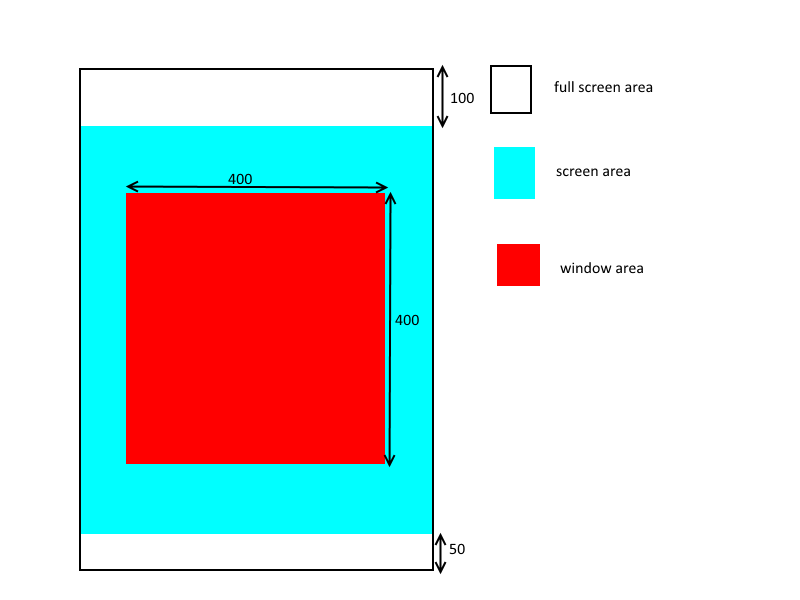

WINDOW¶
WINDOW(Window ID) {
Property 1;
Property 2;
:
:
Property n
};
Window ID is MulID.
If a wra file name is TestWindow.wra, the wra compiler automatically generates TestWindowBase.cs.
TestWindowBase.cs
Make a TestWindow.cs, and inherit the TestWindowBase.
You can specify by PATH the path that is output TestWindowBase.cs on the script.
using UnityEngine;
using System;
public class TestWindow : TestWindowBase {
:
:
}
Example¶
Property¶
RESOURCE = MulID¶
If you do [KsTools]→[Export Window Resource], and outputs it as an asset bundle.
If you set the same MulID , it summarizes the window data to one of the asset bundle.
RESOURCE = 000_014_00000;
In this example, it outputs a 000_014_00000.unity3d as an asset bundle.
RESOURCE = output path¶
It outputs the asset data to the specified path.
Window where you specify the same path to output as an asset that is combined into one.
RESOURCE = "Assets/KsSoft/Resources/windows";
In this example It outputs the asset of “Assets/KsSoft/Resources/windows.asset.”
PATH = window base class output path¶
It sets a path to output the window base class.
The current path is directly under the Unity project.
PATH = "../../../client/Assets/Script/TestWindow.cs";
TEX_ID = Texture ID¶
You set the default texture ID.
This value is applied as the default texture ID of each control.
TEX_ID = 010_000_00010;
TEX_ID 0～7 = Texture ID¶
You set the default texture ID.
If you omit the texture ID of the control, this value is used.
In addition, it specifies here also texture to use for the frame and title bar.
CAPTION = Caption ID¶
You set the window’s caption character.
If WINDOW_STYLE_NOTITLEBAR is set to STYLE , this value is ignored.
CAPTION = 020_000_00010;
POSITION = Ｘ,Ｙ¶
To determine the window display position. Display position changes by an anchor that you specify in STYLE.
SIZE = width,height¶
Set the window size
By using the RELATIVE_SIZE, it can be set in a relative from the screen size.
SIZE = RELATIVE_SIZE(-100),RELATIVE_SIZE(-200);
In this example, if the screen size is 640x960, it makes the window of 540x760.
SCREEN = left top X,left Top Y,width,height¶
Set the position and size of the screen.
Window size and position is determined along the specified screen.
Window position and RELATIVE_SIZE is calculated on the basis of the screen.
If you do not set the screen, the screen is set to full screen.
SCREEN = 0,0,RELATIVE_SIZE(0),RELATIVE_SIZE(0); //全画面と同義
By using the RELATIVE_SIZE, it can be set in a relative from the screen size.
STYLE = WINDOW_STYLE_ANCHOR_CENTER;
SCREEN = 0,-100,RELATIVE_SIZE(0),RELATIVE_SIZE(-150);
SIZE = 400,400;
In this example, It places the window as shown in the figure below.
PRIORITY = display priority¶
Set the display priority of window. The higher the value, display priority is higher.Please be careful to differences between TEXTURE_ZOFFSET .
PRIORITY = 32;
TEXTURE_ZOFFSET = Texture ID,Z offset¶
It tries to render the control that uses the same texture in a single mesh for rendering optimization
Therefore, the priority between the control is display priority among those that are using the same texture.
To change the display priority between each texture, you can use the TEXTURE_ZOFFSET.This property can be set to display priority order of the meshes using the same texture.
The smaller this value, display priority is higher.
TEXTURE_ZOFFSET = 014_000_00010,-1; //手前に表示するように変更
STYLE = style flag 0|style flag 1|..|style flag n¶
Display position anchor flag |
Description |
|---|---|
| WINDOW_STYLE_ANCHOR_DEFAULT | Set the anchor position in the upper left
Same as ANCHOR_LEFTTOP
|
| WINDOW_STYLE_ANCHOR_LEFTTOP | Set the anchor position in the upper left |
| WINDOW_STYLE_ANCHOR_LEFT | Set the anchor position to the left.
Vertical centering
|
| WINDOW_STYLE_ANCHOR_LEFTBOTTOM | Set the anchor position to the left.
Located along the lower edge
|
| WINDOW_STYLE_ANCHOR_TOP | Set the anchor position to the upper side
Lateral centering
|
| WINDOW_STYLE_ANCHOR_CENTER | Set the anchor position in the center of the window |
| WINDOW_STYLE_ANCHOR_BOTTOM | Set the anchor position at the bottom
Lateral centering
|
| WINDOW_STYLE_ANCHOR_RIGHTTOP | Set the anchor position in the upper right |
| WINDOW_STYLE_ANCHOR_RIGHT | Set the anchor position to the right
Vertical centering
|
| WINDOW_STYLE_ANCHOR_RIGHTBOTTOM | Set the anchor position to the right
Located along the lower edge
|
Window display priority flag |
Description |
|---|---|
| WINDOW_STYLE_TOP | Set the display priority of the window to maximum.
This is a lower priority than POPUP and TOPMOST.
If the same priority flag has been specified,display priority is determined by the PRIORITY property.
|
| WINDOW_STYLE_POPUP | Set the display priority of the window to maximum.
It is priority than TOP, and a lower priority than TOPMOST.
If the same priority flag has been specified,display priority is determined by the PRIORITY property.
If you touch other than the window, automatically call the onClose.
|
| WINDOW_STYLE_TOPMOST | Set the display priority of the window to maximum.
This is a higher priority than TOP and POPUP.
If the same priority flag has been specified,display priority is determined by the PRIORITY property.
|
| WINDOW_STYLE_NOECLIPSE | If the same priority flag has been specified,display priority is determined by the PRIORITY property.
|
Window function control flag |
Description |
|---|---|
| WINDOW_STYLE_NOCLOSE | Do not place the close button.
When NOTITLEBAR is attached, close button is not placed
|
| WINDOW_STYLE_NOMINIMIZATION | Unimplemented |
| WINDOW_STYLE_NOHELP | Unimplemented |
| WINDOW_STYLE_NOTITLEBAR | Do not display the title bar. |
| WINDOW_STYLE_NOFRAME | Do not display the frame. |
| WINDOW_STYLE_DISABLE | To stop the function, and to not accept input. |
| WINDOW_STYLE_NODRAG | Stop the window movement by drag. |
| WINDOW_STYLE_NOACTIVE | It does not become active. |
| WINDOW_STYLE_HIDE | Turn off the window display. |
| WINDOW_STYLE_NOBRINGTOTOP | If you set the NOTITLEBAR to flag, close button is not placed
|
| WINDOW_STYLE_OPENBOTTOM | Open the window on the back. |
STYLE = WINDOW_STYLE_NOTITLEBAR|WINDOW_STYLE_NOFRAME|WINDOW_STYLE_NODRAG;